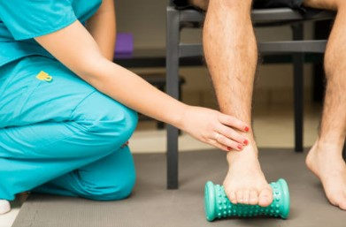

Rehabilitación Física
Dolor de pies por:
- Sustancias tóxicas
- Problemas circulatorios
- Ácido úrico
- Problemas de pisada

Tratamiento
- Alimentación para eliminar toxinas
- Estudio de pisada
- Baños de contraste
- Electroterapia, magnetos y ultrasonido
- Masajes terapéuticos
Agendamiento
📞 Previa cita: 0962222097
🌐 Visítanos en:
Bioterapias y Spa